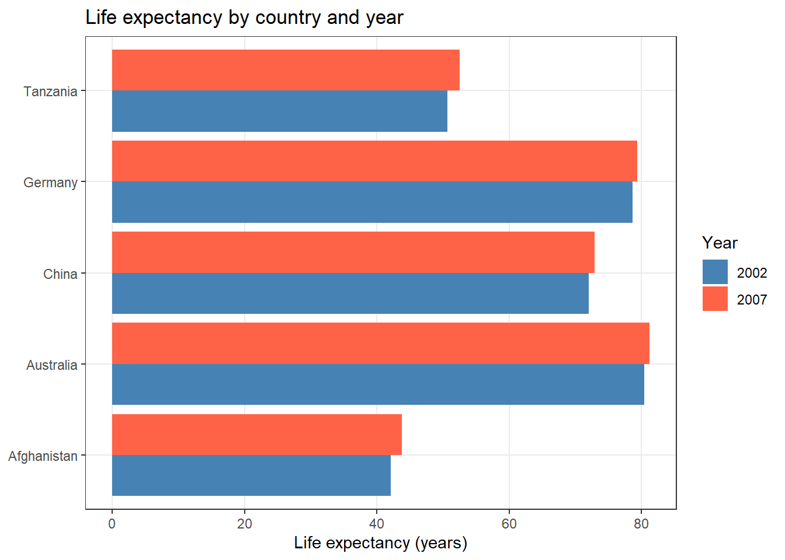

Code
install.packages("dplyr")
install.packages("tidyr")
install.packages("flextable")
install.packages("here")
install.packages("renv")
install.packages("gapminder")
install.packages("checkdown") 

This tutorial covers best practices for conducting reproducible, transparent, and well-organised research in R. Reproducibility — the ability of another researcher (or your future self) to re-run your analysis and obtain the same results — is increasingly recognised as a cornerstone of credible science. Journals, funders, and research institutions are all moving toward requiring it. R, combined with a small set of tools and habits, makes genuine reproducibility achievable with relatively little extra effort.
The tutorial works through the key components of a reproducible R workflow: project organisation, R Projects, reproducible documents, dependency control, version control, file paths, random seeds, and tidy data principles. Each section explains not just how to use a tool, but why it matters for reproducibility.
Before working through this tutorial, please complete or familiarise yourself with:
renv — locking package versionshere — portable, machine-independent pathsset.seed() — replicable stochastic resultsInstall the packages used in this tutorial (once only):
install.packages("dplyr")
install.packages("tidyr")
install.packages("flextable")
install.packages("here")
install.packages("renv")
install.packages("gapminder")
install.packages("checkdown") Load packages:
library(dplyr)
library(tidyr)
library(flextable)
library(here)
library(checkdown) What you’ll learn: How to use R Projects to create self-contained, portable analysis environments
Why it matters: R Projects eliminate the most common cause of broken scripts — hardcoded file paths — and make it trivial to share a complete analysis with collaborators
An R Project is a folder identified by a .Rproj file. When you open a project in RStudio (via File → Open Project, or by double-clicking the .Rproj file), RStudio automatically sets the working directory to the project folder. Everything — scripts, data, outputs — lives relative to that root.

setwd()?Before R Projects became standard, analysts used setwd() to tell R where to look for files:
# The old way — do not do this
setwd("C:/Users/Martin/Documents/Projects/MyCorpusStudy/") This approach has serious problems:
setwd() call.R Projects solve all of these problems. The working directory is always the project root, regardless of which machine the project is opened on.
File → New ProjectNew Directory (for a fresh project) or Existing Directory (for a folder you have already created)Create ProjectA .Rproj file is created in the folder. From now on, open this project by double-clicking the .Rproj file or via File → Open Project in RStudio.
Create a new R Project for each distinct research project or analysis. Never work across projects by navigating to different folders with setwd(). Each project should be fully self-contained: opening the .Rproj file should be sufficient to reproduce the entire analysis.
What you’ll learn: How to organise files within a project for clarity and long-term maintainability
Why it matters: A consistent folder structure makes it immediately obvious where to find files and where to put new ones — for you and for collaborators
A well-organised project folder makes a project understandable at a glance. The following structure works well for most linguistic research projects:
my_project/
├── my_project.Rproj ← R Project file (root anchor)
├── data/
│ ├── raw/ ← original, unmodified data (treat as read-only)
│ └── processed/ ← cleaned/transformed data
├── R/ ← R scripts (.R files)
├── notebooks/ ← R Markdown / Quarto notebooks (.Rmd, .qmd)
├── outputs/
│ ├── figures/ ← saved plots
│ └── tables/ ← exported tables
└── docs/ ← notes, reports, paper drafts A few principles worth following:
Raw data is sacred. Never overwrite or modify the original data files. Save all processed versions separately to data/processed/. This means you can always re-derive processed data from the raw source.
Separate scripts from notebooks. Keep short, reusable functions and data processing steps in .R scripts inside R/. Keep narrative analyses with integrated output in notebooks inside notebooks/.
Name files to sort logically. Use numeric prefixes for scripts that must run in order (01_clean_data.R, 02_analyse.R, 03_visualise.R). Use snake_case for all file names — spaces and special characters in file names cause problems across operating systems.
What you’ll learn: What R Markdown and Quarto notebooks are, why they are the gold standard for reproducible reporting, and how to use them effectively
Why it matters: A rendered notebook is a complete, self-verifying record of your analysis — every number, table, and figure is generated fresh from code each time it is rendered
A notebook (R Markdown .Rmd file or Quarto .qmd file) combines three things in one document:
When you click Render (Quarto) or Knit (R Markdown), R executes every code chunk from scratch in a clean environment and weaves the output together with the prose into a finished HTML, PDF, or Word document.

The rendered output looks like this:

The key property of a rendered notebook is that every result is derived directly from code. There is no manual copying of numbers from a statistical output into a Word document — a step that is both error-prone and opaque. When a reviewer asks “where does this number come from?”, you can point directly to the code chunk that produced it.
This means:
Notebooks also document the reasoning behind analytical choices, not just the code. Prose in a notebook can explain why a particular model was chosen, what a diagnostic plot revealed, or why certain observations were excluded — information that a bare script cannot capture.
While notebooks are most commonly associated with quantitative and computational analyses, they are increasingly used to document qualitative and interpretative work. A notebook can display annotation decisions alongside the data being annotated, making the logic of qualitative coding transparent and verifiable. Recent studies have demonstrated their value in corpus pragmatics and corpus-based discourse analysis for exactly this purpose.
R Markdown (.Rmd) is the original notebook format for R, stable and widely used. Quarto (.qmd) is its successor — it supports R, Python, Julia, and Observable JS in the same document, has a cleaner syntax, and is the format used by all LADAL tutorials. If you are starting fresh, use Quarto. If you have existing R Markdown files, they continue to work and do not need to be converted.
Feature | R Markdown | Quarto |
|---|---|---|
File extension | .Rmd | .qmd |
Render function | knitr::knit() / rmarkdown::render() | quarto::quarto_render() |
Multi-language | R only (+ Python via reticulate) | R, Python, Julia, Observable |
Output formats | HTML, PDF, Word, slides | HTML, PDF, Word, slides, books, websites |
LADAL tutorials | Legacy format | Current format |
Q1. Why is using setwd() at the top of a script considered bad practice for reproducibility?
Q2. What is the key reproducibility advantage of a rendered notebook over a plain R script?
What you’ll learn: Conventions for writing readable, consistent R code
Why it matters: Code you write today will be read — by collaborators, reviewers, and your future self — months or years from now. Readable code is reproducible code.
Reproducibility is not only about running code — it is also about understanding it. Code that is hard to read is hard to verify, hard to modify, and hard to debug. The following conventions are widely adopted in the R community and are used throughout LADAL tutorials.
# Good: lowercase with underscores (snake_case)
word_count <- 42
reaction_time_ms <- 487.3
corpus_summary <- data.frame()
# Avoid: mixed case, dots, or cryptic abbreviations
WordCount <- 42 # CamelCase (used in some communities, not LADAL)
reaction.time <- 487.3 # dots can conflict with S3 method names
rt <- 487.3 # cryptic — what does rt mean? # Good: spaces around operators, after commas, consistent indentation
corpus_summary <- corpus_data |>
dplyr::filter(register == "Academic") |>
dplyr::group_by(speaker_id) |>
dplyr::summarise(
mean_wc = mean(word_count, na.rm = TRUE),
sd_wc = sd(word_count, na.rm = TRUE),
.groups = "drop"
)
# Avoid: cramped, hard-to-read code
corpus_summary<-corpus_data|>dplyr::filter(register=="Academic")|>
dplyr::group_by(speaker_id)|>dplyr::summarise(mean_wc=mean(word_count,na.rm=TRUE)) # Good: comments explain WHY, not just WHAT
# Remove speakers with fewer than 3 observations — insufficient data for per-speaker models
corpus_data <- corpus_data |>
dplyr::group_by(speaker_id) |>
dplyr::filter(dplyr::n() >= 3) |>
dplyr::ungroup()
# Avoid: comments that merely restate the code
# group by speaker_id and filter
corpus_data <- corpus_data |>
dplyr::group_by(speaker_id) |>
dplyr::filter(dplyr::n() >= 3) |>
dplyr::ungroup() Keep lines under 80 characters. RStudio shows a vertical guideline at column 80 by default (Tools → Global Options → Code → Display → Show margin). Long lines are hard to read and cause problems in version control diffs.
Every R script or notebook should follow a consistent top-to-bottom structure:
# ===========================================================
# Script: 02_analyse_register_variation.R
# Author: Martin Schweinberger
# Date: 2026-02-19
# Description: Mixed-effects model of word count by register
# ===========================================================
# 1. PACKAGES ------------------------------------------------
library(dplyr)
library(lme4)
library(here)
# 2. OPTIONS -------------------------------------------------
options(stringsAsFactors = FALSE)
options(scipen = 100)
set.seed(42)
# 3. LOAD DATA -----------------------------------------------
corpus <- readRDS(here::here("data", "processed", "corpus_clean.rds"))
# 4. ANALYSIS ------------------------------------------------
# ... analysis code here
# 5. SAVE OUTPUTS --------------------------------------------
# ... save results here lintr and styler Packages
Two packages automate style checking and fixing:
lintr checks your code against a style guide and reports violations — like a spell-checker for code stylestyler automatically reformats your code to comply with the tidyverse style guideinstall.packages("lintr")
install.packages("styler")
lintr::lint("R/my_script.R") # check style
styler::style_file("R/my_script.R") # auto-fix style renvWhat you’ll learn: How to use renv to lock the exact package versions used in a project, so the analysis can be reproduced identically on any machine — now or in the future
Why it matters: R packages change over time. An analysis that runs correctly today may produce different results or fail entirely in two years if packages have been updated. renv prevents this.
Consider this scenario: you publish a paper in 2024 using a mixed-effects model fitted with lme4 version 1.1-35. A reviewer in 2025 tries to reproduce your analysis, but lme4 1.1-37 has changed how it handles singular fit warnings and produces slightly different output. Your analysis is no longer exactly reproducible — even with identical code and data.
This is package version drift, and it is one of the most common obstacles to long-term reproducibility. The renv package solves it.
renv Worksrenv creates a project-local library — a folder inside your project that contains exactly the versions of all packages used. When you share the project, collaborators install the same versions from the renv.lock file. The project is isolated from the user’s main R library, so updates to packages installed globally do not affect the project.

renv# Install renv (only once, globally)
install.packages("renv")
# Initialise renv in your project
renv::init() renv::init() scans your project for package dependencies, installs them into the project library, and creates a renv.lock file recording exact package versions.
renv.lock FileThe lock file is plain text (JSON format) and records the name, version, and source of every package:
{
"R": {
"Version": "4.3.2",
"Repositories": [{"Name": "CRAN", "URL": "https://cloud.r-project.org"}]
},
"Packages": {
"dplyr": {
"Package": "dplyr",
"Version": "1.1.4",
"Source": "Repository",
"Repository": "CRAN",
"Hash": "..."
}
}
} This file should be committed to version control (Git) — it is the machine-readable specification of your software environment.
renv Workflow# Install a new package (adds it to the project library)
renv::install("emmeans")
# After installing or removing packages, update the lock file
renv::snapshot()
# Restore the project environment on another machine or after a clean install
renv::restore()
# Check the status of the project library vs. the lock file
renv::status() What you’ll learn: How to use Git for version control and GitHub for sharing and collaborating on R projects
Why it matters: Version control is a complete, timestamped record of every change ever made to your code. It makes collaboration safe, enables you to revert mistakes, and provides a permanent citable home for your analysis.
Git is a version control system — software that tracks changes to files over time. Every time you commit a set of changes, Git records what changed, who changed it, and when. You can browse the entire history of a project, compare any two versions, and revert to any earlier state.
GitHub is a web platform that hosts Git repositories. It serves as a permanent, shareable, and optionally public home for your project. A GitHub repository can be shared with collaborators, cited in papers (with a DOI via Zenodo), and submitted as supplementary material to journals.

Before using Git with RStudio, you need Git installed on your computer:
git --version — if Git is not installed, macOS will prompt you to install it via Xcode Command Line Toolssudo apt install gitAfter installation, tell Git your name and email (used to label your commits):
git config --global user.name "Your Name"
git config --global user.email "your.email@example.com" You also need a free GitHub account. The usethis package provides the easiest way to connect RStudio to GitHub:
install.packages("usethis")
usethis::create_github_token() # opens GitHub to create a token
gitcreds::gitcreds_set() # stores the token in your credential manager The simplest workflow is to create the GitHub repository first, then clone it as an R Project:
https://github.com/yourusername/your-repo.git)File → New Project → Version Control → GitAlternatively, if you already have an R Project and want to connect it to a new GitHub repository:
# From inside your R Project
usethis::use_git() # initialise Git in the project
usethis::use_github() # create a GitHub repo and push Once your project is connected to GitHub, the daily workflow has three steps:
# In the Terminal pane (not the Console):
# 1. Stage: mark files to include in the next commit
git add R/my_analysis.R
git add data/processed/corpus_clean.rds
# 2. Commit: save the staged changes with a message
git commit -m "Add register effect to mixed-effects model"
# 3. Push: upload commits to GitHub
git push In RStudio, the Git pane (top right, after Git is initialised) provides a visual interface for staging, committing, and pushing without using the Terminal.
Commit everything needed to reproduce the analysis:
.R, .Rmd, .qmd)renv.lock file.Rproj fileREADME.md describing the projectDo not commit:
.html, .pdf) — these are derived products that can be regeneratedrenv/library/ folder (the lock file is sufficient; collaborators restore from it)Create a .gitignore file to tell Git which files to ignore:
# Automatically create a sensible .gitignore for an R project
usethis::use_git_ignore(c("renv/library/", "*.html", "*.pdf",
"data/raw/", ".Rhistory", ".RData")) Q1. What is the difference between git commit and git push?
Q2. Why should large raw data files generally NOT be committed to a Git repository?
hereWhat you’ll learn: How to use the here package to write file paths that work on any machine without modification
Key function: here::here()
Even within an R Project, file paths can cause problems if written carelessly. The here package provides a single, simple function that constructs file paths relative to the project root — correctly on Windows, Mac, and Linux — without any configuration.
Within an R Project, you might write:
# This looks like a relative path, but it depends on the working directory
data <- read.csv("data/processed/corpus.csv") This works when the working directory is the project root (which R Projects guarantee). But it breaks if a script is sourced from a subdirectory, or if the file is run as part of a rendered document that temporarily changes the working directory.
here::here() as the Solutionlibrary(here)
# Constructs the full path from the project root, regardless of where R is run from
data <- read.csv(here::here("data", "processed", "corpus.csv"))
# Save a processed file
saveRDS(data, here::here("data", "processed", "corpus_clean.rds"))
# Save a plot
ggsave(here::here("outputs", "figures", "register_plot.png"),
width = 8, height = 5, dpi = 300) here::here("data", "processed", "corpus.csv") constructs the platform-appropriate path separator automatically (/ on Mac/Linux, \ on Windows) and always anchors to the project root.
library(here)
# Shows where here considers the project root to be
here::here() [1] "C:/Users/Martin/Documents/projects/ladal"Absolute paths ("C:/Users/Martin/...", "/home/martin/...") break on any other machine. Paths relative to an unspecified working directory break when the script is run from a different location. here::here() is the correct solution in both cases. Make it a habit to use it for every file read and write operation.
set.seed()What you’ll learn: How to make analyses involving random processes exactly reproducible using set.seed()
Key function: set.seed()
Why it matters: Any analysis involving random numbers — random forests, bootstrap confidence intervals, train/test splits, simulation studies — will produce different results each run unless the random seed is fixed
R’s random number functions produce different output every time they are called:
# Two calls to sample() give different results
sample(1:10, size = 5) [1] 1 5 6 9 8sample(1:10, size = 5) [1] 5 4 1 6 7This means that any analysis using randomness — shuffling data, drawing bootstrap samples, initialising random forests — will differ between runs. A collaborator running the same code will get different numbers. A reported result cannot be reproduced exactly.
set.seed()set.seed() initialises R’s internal random number generator to a known state. Every random operation that follows will produce the same sequence of numbers, on any machine, in any R version:
# Fix the seed, then draw a sample
set.seed(42)
sample(1:10, size = 5) [1] 1 5 10 8 2# Same seed, same result
set.seed(42)
sample(1:10, size = 5) [1] 1 5 10 8 2# Different seed, different result
set.seed(99)
sample(1:10, size = 5) [1] 1 6 9 5 3set.seed()Set the seed once, at the top of your script or notebook, immediately after loading packages and options. This ensures every random operation in the document is reproducible from a single, documented starting point:
# Top of script: packages, options, seed
library(dplyr)
library(ranger)
options(stringsAsFactors = FALSE)
set.seed(42) # ← set once, here, at the top
# All subsequent random operations are now reproducible set.seed() Is Version-Sensitive
The default random number generator changed in R 3.6.0. Results from set.seed(42) in R 3.5 differ from results in R 3.6+. This is another reason why recording your R version (via sessionInfo()) and locking your environment with renv is important for long-term reproducibility.
set.seed()
Q1. You run a random forest model twice with identical code and get slightly different variable importance scores each time. What is the most likely cause and fix?
What you’ll learn: The principles of tidy data — a consistent, analysis-ready way to structure tabular data
Why it matters: Tidy data works immediately with all tidyverse functions; untidy data requires transformation before almost any analysis can begin
The same underlying data can be stored in multiple formats. Consider life expectancy data for five countries across two years:
Table 1 (wide format): Years are column names — compact for reading, problematic for analysis
country | continent | 2002 | 2007 |
|---|---|---|---|
Afghanistan | Asia | 42.1 | 43.8 |
Australia | Oceania | 80.4 | 81.2 |
China | Asia | 72.0 | 72.9 |
Germany | Europe | 78.7 | 79.4 |
Tanzania | Africa | 50.7 | 52.5 |
Table 2 (long/tidy format): One observation per row — each year is its own row, life expectancy is one column
country | continent | year | life_exp |
|---|---|---|---|
Afghanistan | Asia | 2002 | 42.1 |
Afghanistan | Asia | 2007 | 43.8 |
Australia | Oceania | 2002 | 80.4 |
Australia | Oceania | 2007 | 81.2 |
China | Asia | 2002 | 72.0 |
China | Asia | 2007 | 72.9 |
Germany | Europe | 2002 | 78.7 |
Germany | Europe | 2007 | 79.4 |
Tanzania | Africa | 2002 | 50.7 |
Tanzania | Africa | 2007 | 52.5 |
Table 2 is tidy. Tidy data follows three rules:
country, continent, year, life_exp are all separate columnsTidy data is not just a convention — it is the format that all tidyverse functions expect. dplyr::group_by(), ggplot2::ggplot(), and statistical model functions all assume that the variable you want to use as a grouping factor is a column, not spread across multiple column names.
# Tidy format enables immediate plotting without reshaping
life_exp_long <- life_exp |>
tidyr::pivot_longer(
cols = c(`2002`, `2007`),
names_to = "year",
values_to = "life_exp"
)
ggplot2::ggplot(life_exp_long,
ggplot2::aes(x = country, y = life_exp,
fill = year)) +
ggplot2::geom_col(position = "dodge") +
ggplot2::scale_fill_manual(values = c("steelblue", "tomato")) +
ggplot2::coord_flip() +
ggplot2::theme_bw() +
ggplot2::theme(panel.grid.minor = ggplot2::element_blank()) +
ggplot2::labs(title = "Life expectancy by country and year",
x = NULL, y = "Life expectancy (years)", fill = "Year") 
Problem | Example | Fix |
|---|---|---|
Column headers are values, not variable names | Columns: country, 2002, 2007, 2012 (years as column names) | pivot_longer() to move year values into a year column |
Multiple variables stored in one column | Column 'age_gender' contains values like 'M_25', 'F_30' | tidyr::separate() to split into age and gender columns |
One observation spread across multiple rows | A speaker's metadata split across three rows | Aggregate or pivot to one row per observation unit |
Multiple types of observational units in one table | Speaker info and utterance data mixed in one table | Split into separate tables, join when needed |
What you’ll learn: How to choose the right file format for saving data, balancing portability, size, and fidelity
Key functions: write.csv(), saveRDS(), readRDS()
Data files can be stored in many formats, each with trade-offs in portability, file size, and how much R-specific information (column types, factor levels) is preserved.
Format | Size | Portable to | Preserves | Best for |
|---|---|---|---|---|
CSV (.csv) | Medium | Any software | Values as text only | Sharing data with non-R users |
Excel (.xlsx) | Large | Excel / R / Python | Values + basic formatting | Sharing with Excel users |
RDS (.rds) | Small | R only | All R types and attributes | Saving a single processed R object |
RData (.rda/.RData) | Small | R only | Multiple objects at once | Saving multiple R objects together |
To illustrate the size difference, we create a moderately sized data frame and save it in each format:
# Create a sample data frame (1000 rows, 8 columns)
set.seed(42)
n <- 1000
demo_data <- data.frame(
doc_id = paste0("doc", 1:n),
register = sample(c("Academic", "News", "Fiction"), n, replace = TRUE),
word_count = round(rnorm(n, 300, 60)),
year = sample(2015:2023, n, replace = TRUE)
)
# Save in different formats
write.csv(demo_data,
here::here("data", "demo.csv"), row.names = FALSE)
saveRDS(demo_data,
here::here("data", "demo.rds"))
openxlsx::write.xlsx(demo_data,
here::here("data", "demo.xlsx"))
# Compare file sizes
sizes <- file.info(c(
here::here("data", "demo.csv"),
here::here("data", "demo.rds"),
here::here("data", "demo.xlsx")
))$size / 1024 # size in KB
names(sizes) <- c("CSV", "RDS", "Excel")
round(sizes, 1) In practice, RDS is typically 3–5× smaller than the equivalent CSV and 5–8× smaller than Excel, because it uses R’s native binary compression.
save.image() or .RData) — this creates an opaque binary blob that is hard to version-control and makes scripts implicitly depend on a hidden state# Disable automatic workspace saving in RStudio:
# Tools → Global Options → General →
# set "Save workspace to .RData on exit" to NEVER
# and uncheck "Restore .RData into workspace at startup" Why it matters: Recording your session information at the end of every notebook creates a permanent, human-readable log of the exact software environment used — essential for troubleshooting, peer review, and long-term reproducibility
The sessionInfo() function prints a complete record of:
Always include this at the end of every notebook:
sessionInfo() In combination with renv.lock, sessionInfo() output provides a complete snapshot of the software environment in a human-readable format that can be included in supplementary materials or reported in a methods section.
By the end of any project, a fully reproducible analysis should have:
Schweinberger, Martin. 2026. Reproducibility with R. Brisbane: The University of Queensland. url: https://ladal.edu.au/tutorials/r_reproducibility/r_reproducibility.html (Version 2026.02.19).
@manual{schweinberger2026repro,
author = {Schweinberger, Martin},
title = {Reproducibility with R},
note = {https://ladal.edu.au/tutorials/r_reproducibility/r_reproducibility.html},
year = {2026},
organization = {The University of Queensland, Australia. School of Languages and Cultures},
address = {Brisbane},
edition = {2026.02.19}
} sessionInfo() R version 4.4.2 (2024-10-31 ucrt)
Platform: x86_64-w64-mingw32/x64
Running under: Windows 11 x64 (build 26200)
Matrix products: default
locale:
[1] LC_COLLATE=English_United States.utf8
[2] LC_CTYPE=English_United States.utf8
[3] LC_MONETARY=English_United States.utf8
[4] LC_NUMERIC=C
[5] LC_TIME=English_United States.utf8
time zone: Australia/Brisbane
tzcode source: internal
attached base packages:
[1] stats graphics grDevices datasets utils methods base
other attached packages:
[1] flextable_0.9.7 checkdown_0.0.13 gapminder_1.0.0 lubridate_1.9.4
[5] forcats_1.0.0 stringr_1.5.1 dplyr_1.2.0 purrr_1.0.4
[9] readr_2.1.5 tibble_3.2.1 ggplot2_4.0.2 tidyverse_2.0.0
[13] tidyr_1.3.2 here_1.0.1 DT_0.33 kableExtra_1.4.0
[17] knitr_1.51
loaded via a namespace (and not attached):
[1] gtable_0.3.6 xfun_0.56 htmlwidgets_1.6.4
[4] tzdb_0.4.0 vctrs_0.7.1 tools_4.4.2
[7] generics_0.1.3 pkgconfig_2.0.3 data.table_1.17.0
[10] RColorBrewer_1.1-3 S7_0.2.1 uuid_1.2-1
[13] lifecycle_1.0.5 compiler_4.4.2 farver_2.1.2
[16] textshaping_1.0.0 codetools_0.2-20 litedown_0.9
[19] fontquiver_0.2.1 fontLiberation_0.1.0 htmltools_0.5.9
[22] yaml_2.3.10 pillar_1.10.1 openssl_2.3.2
[25] fontBitstreamVera_0.1.1 commonmark_2.0.0 zip_2.3.2
[28] tidyselect_1.2.1 digest_0.6.39 stringi_1.8.4
[31] labeling_0.4.3 rprojroot_2.0.4 fastmap_1.2.0
[34] grid_4.4.2 cli_3.6.4 magrittr_2.0.3
[37] withr_3.0.2 gdtools_0.4.1 scales_1.4.0
[40] timechange_0.3.0 rmarkdown_2.30 officer_0.6.7
[43] askpass_1.2.1 ragg_1.3.3 hms_1.1.3
[46] evaluate_1.0.3 viridisLite_0.4.2 markdown_2.0
[49] rlang_1.1.7 Rcpp_1.0.14 glue_1.8.0
[52] xml2_1.3.6 renv_1.1.1 svglite_2.1.3
[55] rstudioapi_0.17.1 jsonlite_1.9.0 R6_2.6.1
[58] systemfonts_1.2.1